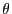
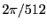

Currently the graphics operation word is 56 bits long.
The significance of the bits are described below:
- Bits 55 to 53: The opcode.
With five different types of operations, we used three bits to represent the desired operation.
0b000 is rotation about the x-axis, 0b001 is rotation about the y-axis, 0b010 is rotation about the z-axis, 0b100 is translation, 0b101 is scaling.
- Bits 52 to 48: An index to a parametrized value.
Updating parametrized values was not implemented, but 5 bits were reserved to index into a structure or table of values that would be updated upon very frame.
Specifying 0b00000 would be always return a value of 1 (no parametrization).
- Bits 47 to 32, 31 to 16, and 15 to 0: The three 16-bit arguments to the transformations.
For translation and scaling, all three values are used for the x-, y-, and z-transformations.
For rotation, only the first is used as 
, the degree of rotation, represented as units of 
radians.
2007-12-02